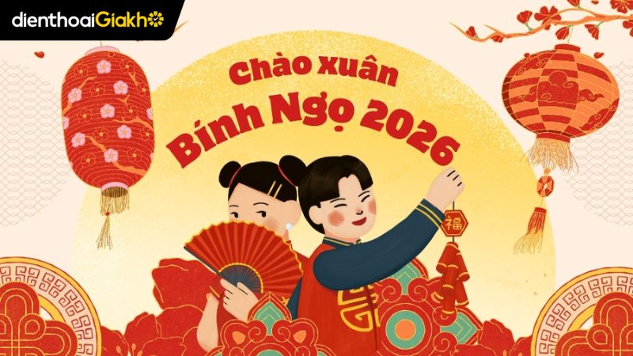

Đây là nội dung giới thiệu về Tết...
Tết Nguyên Đán là ngày lễ cổ truyền lớn nhất và quan trọng nhất của người Việt Nam. Đây là khoảnh khắc giao thoa giữa năm cũ và năm mới, là dịp để mỗi người con đất Việt hướng về nguồn cội, gia đình. Hình ảnh bánh chưng xanh, hoa mai vàng, hoa đào thắm cùng tiếng pháo hoa rộn ràng đã trở thành biểu tượng bất diệt trong tâm thức mỗi người. Tết không chỉ là nghỉ ngơi, mà còn là hành trình của sự đoàn viên, nơi những người đi xa trở về, cùng nhau quây quần bên mâm cơm tất niên và trao nhau những lời chúc bình an, may mắn cho một khởi đầu mới hanh thông.
Tết Năm Nay: Xuân Bính Ngọ 2026
Nếu bạn đang nói về Tết của năm hiện tại (2026), đây là một vài điểm nhấn thú vị:
Năm con Ngựa (Bính Ngọ): Theo quan niệm dân gian, con Ngựa tượng trưng cho sự bền bỉ, tốc độ và tinh thần tự do. Vì vậy, Tết Bính Ngọ 2026 mang theo kỳ vọng về một năm phát triển mạnh mẽ, bứt phá và tràn đầy năng lượng tích cực.
Thời điểm: Ngày mùng 1 Tết năm nay rơi vào thứ Ba, ngày 17 tháng 2 năm 2026 dương lịch. Đây là khoảng thời gian tiết trời xuân thường rất đẹp, dịu mát, lý tưởng cho việc du xuân và lễ chùa.
Tinh thần: Trong bối cảnh hiện đại, Tết 2026 tiếp tục là sự kết hợp hài hòa giữa các nghi lễ truyền thống (như tiễn ông Táo, xông đất) và xu hướng du lịch bền vững hoặc sum họp tối giản nhưng ấm áp.Một chút thú vị: Người tuổi Ngọ năm nay thường được chúc sẽ "Mã đáo thành công" – mọi việc chạm tay vào đều mang lại kết quả tốt đẹp và nhanh chóng.